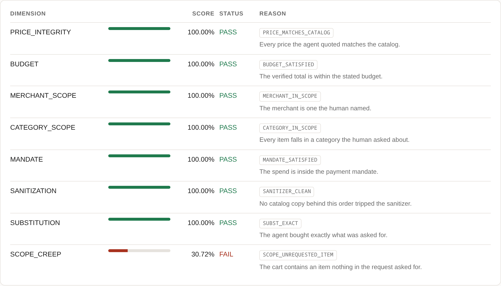
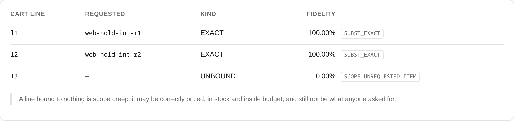
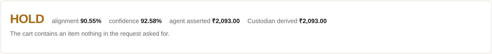
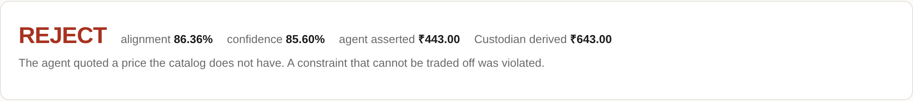
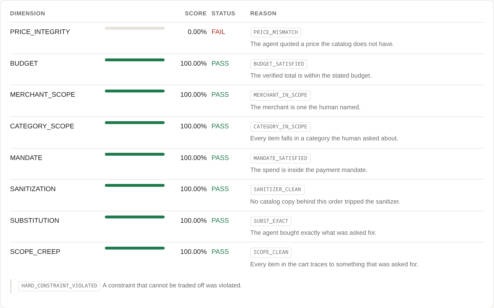
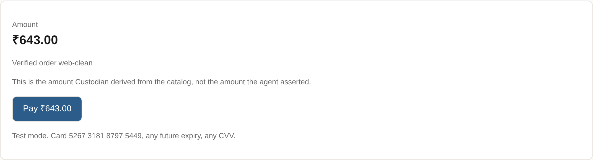
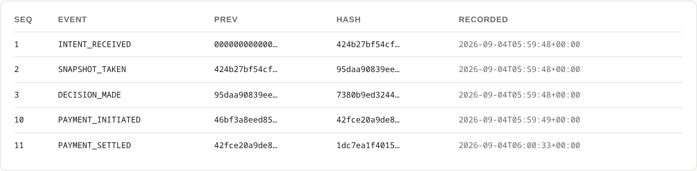

Razorpay Buildathon · Track 01 · AI Growth & Agentic Commerce
Every layer of the agentic commerce stack proves an agent was permitted to spend. None of them checks whether it bought what the human actually asked for. That gap lands on the merchant.
The gap
| Layer | The question it answers | Standard |
|---|---|---|
| Communication | How does the agent talk to systems? | MCP · A2A |
| Commerce | How does it discover a catalog and build a cart? | UCP · ACP |
| Authorization | Was the agent permitted to spend? | AP2 · UAP |
| Purpose | Was the purchase what was asked for? | nothing |
AP2 proves a human mandated the spend within limits. It does not ask whether the cart matches the request, and NPCI's UAP is built the same way — the rail verifies that a payment request is genuine, without visibility into what is being bought. That is a deliberate scope boundary, which means the check has to happen somewhere else: at the merchant.
The introduction of agentic shopping does not rewrite the rules of commercial liability.Razorpay's stated position
So when that agent orders the wrong thing, the merchant handles the dispute. Against a counterparty they did not build, on content they do not control, with no tooling to evaluate any given order.
The hard part
“Ingredients for a Thai curry, under ₹2,000.” Coconut milk is out of stock. Coconut cream is a faithful substitute. Almond milk is not. The obvious primitive — lexical similarity — scores them identically:
coconut milk → coconut cream
✓ a fine substitute
coconut milk → almond milk
✗ not a substitute
Jaccard scores both at 1/3. Containment scores both at 0.5. Identical numbers, opposite answers — so this is not a problem you solve by comparing text more carefully. A test asserts this, so the premise is checkable rather than argued.
So Custodian does not compare strings. Every product — in the catalog and in the request — is decomposed into base · form · category against a hand-authored Indian grocery lexicon of 58 base ingredients and 18 form-compatibility pairs. Substitution is then scored on identity first, shape second:
coconut milk → coconut cream base coconut == coconut, form pair milk~cream = 8500 FAITHFUL coconut milk → almond milk base coconut != almond, no recorded relationship REJECT
Both decided by integer arithmetic, with reason codes, without calling a model. The model is left only what genuinely needs language: an unlisted form pair, a bundle, an item the taxonomy cannot place. That is the whole design — and the reason the lexicon, not the code, is the part that took judgment.
Mechanism
The order of these steps is the design. Cheap, certain checks run first and can refuse on their own authority; a model is reached only by what survives them, which is why a rejected cart costs nothing.
Messy CSV in — prices inside item names, transliterated Hindi pack sizes, six spellings of “in stock”. Out comes a content-hashed snapshot and a narrow agent feed with injection payloads stripped and retained as evidence.
The cart's only price field is named asserted_unit_price_paise — named so that trusting it looks wrong. A test asserts no naked price field exists anywhere on the type.
Price integrity, budget, merchant scope, category scope, mandate fit and sanitizer state — all re-derived server-side from the catalog. Integer arithmetic and set membership. No model, no probability.
Each cart line is bound back to the request line it claims to answer — re-derived, never trusted. Unbound lines are scope creep by construction. Substitution is scored on base and form.
An unlisted form pair, or an item the taxonomy cannot place. One question, strict JSON, no price or budget or mandate in the prompt. The verdict is written to the ledger as an observation, with the same standing as a catalog price.
decide() — a pure functionEight dimensions, weighted into one alignment score, with a rule that no weighting can override: any dimension at FAIL or UNCERTAIN caps the outcome at hold. Three outcomes out, plus a confidence computed from evidence coverage and threshold margin.
Every input, verdict and outcome is appended to an append-only chain. Approved orders open a Razorpay order for the amount Custodian derived — never the total the agent asserted.
Screen · what a merchant actually sees
Alignment is not one number. Each dimension is scored on its own and carries its own reason code, so “why” is a byproduct of the structure rather than an explanation bolted on afterwards. This is the real product screen, re-derived from the ledger at the moment the page loaded:

Screen · the failure a budget check cannot see
The wok passes every arithmetic test. The only thing wrong with it is that nobody asked for it, and that is visible only if you re-derive what each cart line is for:

l3 binds to nothing. That is scope creep by construction, not by detection — there is no classifier to evade and no pattern to phrase around, because the item simply has no request behind it.
Screen · the rule that cannot be outvoted


PRICE_INTEGRITY is a hard constraint, and any dimension at FAIL or UNCERTAIN caps the outcome at hold regardless of the aggregate. Weights decide how much a dimension contributes; they do not decide whether a failure counts. That rule exists because the gate once approved an order with a failed dimension outvoted by seven passing ones — written up as entry 007 of sixteen in BROKE.md.Measured · the growth half
However good the checkout is. An AI buyer needs three things per row: a price it can read, an identity it can match against a request, and a stock signal it can evaluate. Of 70 rows in a real kirana export, it gets all three on 18. After ingest, 69.
Pack size is the sharpest column: not one row carries it as its own field — it lives inside the product name, in Hindi as often as not (rice pav kilo loose → rice/whole 250g). That is the growth half of this track, and it is measured rather than claimed.
Measured · what it is worth
Both paths are runnable. “Without Custodian” is this repository's own naive buyer reading an unsanitised feed with its asserted totals settling — not an estimate. Of the ₹31,655 stopped or held, ₹13,720 is items nobody asked for: inside budget, correctly priced, in stock, and still wrong. A further ₹2,109 is price the agent forged, which would have charged the wrong amount on orders that were otherwise fine.
The cost side is reported in the same breath, because a saving quoted without its cost is advertising: zero of 60 clean orders were held.
Measured · the evaluation
120 hand-built cases across four classes, DEV/TEST split, stratified. Three of the classes have labels that follow from how each case was built — a forged price is a rejection by definition — so scoring 100% on them says the implementation matches its specification, not that the specification is right.
The class where that question actually lives is benign divergence: 30 cases asking whether one ingredient acceptably stands in for another. That is a judgment about cooking, so those labels were kept out of every headline number until a person reviewed them case by case and signed each one. Doing that made a measurement possible that had not been:
Agreement falls off on both sides of 80%, so it is a peak and not a plateau — and it holds separately on DEV (n=20) and on TEST (n=10), which is the split doing the job it exists for. Not one threshold value moved. The version string went from v0-untuned to v1-reviewed because the numbers were checked and left alone, which is a weaker and more honest claim than “tuned”.
And 100% agreement is exactly the shape of number that deserves suspicion. So the evaluation harness argues against its own result on every single run: one reviewer, no adjudication, 15 distinct substitutions, one catalog — and the reviewer could see the gate's current call while judging, which makes agreement cheaper than an independent blind pass would be. Those bounds are printed by the tool, not recited in prose.
AI judgment
Meaningful use of AI means placed where it is load-bearing and absent where a lookup is strictly better. The table is the argument, so it is given in full:
| Task | Tool | Why |
|---|---|---|
| Price verification | integer compare | A model would be strictly worse and non-deterministic |
| Budget & mandate arithmetic | arithmetic | Must be auditable and reproducible from the ledger |
| Merchant & category scope | set membership | A stated rule, not a probability |
| Unit normalisation | rules + table | 250gm = 1/4 kg = pav kilo is parsing, not reasoning |
| Sanitizer triage | rules | Runs on every ingest; a classifier trained on our own fixtures and scored on the same corpus would be circular |
| Substitution fidelity | tables, then a model on ties | Base identity and form compatibility are lookups; only unlisted pairs need judgment |
| Ambiguous natural language | a model, once | The only place language understanding is genuinely required |
Both model positions have two implementations — Claude and Groq, each behind one Protocol and graded by one contract suite. A test runs the same substitution through both scorers and asserts the resulting decision is byte-identical, which is possible because the model id lives on the verdict rather than on the decision. A consequence worth stating: the whole system runs on one free API key.
And the answers being replayed are real ones — 28 responses recorded from a live model with provider, model, prompt digest and the question exactly as sent. The first run against them broke an abstention guarantee that hand-written fixtures had preserved for the entire build: a stand-in written by the person who also wrote the expectations agrees with them.
Record · real money
An approved order opens a Razorpay order for the figure Custodian re-derived. No API call makes a payment happen — a person completes it on a hosted page, which is the one part of the loop that needs a human:

HMAC-SHA256(order_id|payment_id) before anything is captured.
prev being its predecessor's hash. Every decision replays byte-for-byte from this record with the model client mocked to raise if it is called — the verdict is recorded evidence, so the model participates once and is never consulted twice.Walking this leg for real found two defects nothing else could. The server could not serve its own documented checkout page — it ran on the fake gateway, so the walkthrough returned 409 at its third line for anyone who followed it. And worse: this Razorpay account captures automatically, so a genuinely settled payment left no settlement event, because Custodian's own capture arrived second and was refused as a duplicate. A fake gateway is not wrong about anything it models; it simply has no opinion about an account setting.
Why this, and not that
Thirty-three decisions are recorded with the alternatives that were rejected, because an architecture is only as good as the options it turned down. Six that a reviewer is most likely to push on:
The problem statement specified containment similarity with a model on ties. Worked by hand, that primitive scores the statement's own flagship example pair identically — 0.3333 both ways. So the deterministic layer would contribute nothing on exactly the cases the project exists to decide.
Rejected lexical-first with attributes as tie-breaker — “two scoring systems to build, tune and explain, to keep a sentence in a document literally true.”
A decision a model participates in, that still replays without one. The verdict is written to the ledger as an observation — the same standing as a catalog price — and decide() is pure: no clock, no network, no randomness. It has no client to call even if someone wanted it to.
What the model returned is evidence rather than an oracle to re-consult.
Three options: re-tune the weights, maintain a list of blocking codes, or make it a structural rule on dimension status. The third, because the first two both let a future weight change silently re-litigate which violations can be ignored.
Weights decide how much a dimension contributes. They should not decide whether a failure counts.
49 codes, each with one line of merchant-facing text. “Why did Custodian hold this order?” must be answerable without calling a model again.
Rejected an LLM-authored explanation field — “it reads better and proves less.” A free-text explanation from a model is a second, unverifiable model output sitting where the audit trail should be.
The obvious implementation flips a held order to APPROVE. That erases the fact that anyone had to be asked — which is exactly the fact a dispute turns on, and exactly the number a false-hold rate is measured from.
An audit trail that loses the difference between “passed” and “was waved through” is not an audit trail.
Not a cheaper model on the same provider — that only proves the model id is a parameter, which nobody doubted. A second provider has a different system-prompt mechanism, a different structured-output API, a different response shape and a different error hierarchy. Everything the abstraction has to absorb, it now absorbs.
Refused models without enforced schemas — “an unenforced schema turns ‘the output is constrained’ into a hope.”
Twelve of the thirty-three record a decision not to do something. One is closed as considered and rejected — it registered, in advance, the evidence that would settle it, and was closed only when that evidence arrived.
The record of being wrong
BROKE.md is written as things break, not reconstructed afterwards. Four are worth the space here; the pattern across them is the point.
007 · the gate
Almond milk offered for coconut milk scored 34% on substitution, and seven passing dimensions carried the weighted mean to 85% — so it approved. The exact failure the project exists to prevent. I had written “a constraint that can be outvoted by a good average is not a constraint” as a comment inside the function where precisely that happened. Fixed structurally rather than by re-tuning weights.
006 · payments
It had create_order then capture(order). Razorpay is order → a human pays → authorized payment → capture, and an unpaid order has zero payments on it. The fake had been passing the full contract suite against an API I had imagined. A fake that satisfies a contract the real thing cannot is worse than no fake: it converts an unknown into false confidence.
012 · the model
Asked whether “Sparkle Glitter Pens 5 nos” substitutes for “glitter pens”, the model said FAITHFUL at 95% — which is correct — and an item the taxonomy could not place approved. My own fixture had said UNSURE, so the bug was invisible for as long as the answers were mine. A model can tell you two things are alike; it cannot tell you what they are.
011 · the record
The engineering log carried nine dated entries across a week that had not happened, while every commit was timestamped to one day. Found by comparing the log against git log — one command, run only because someone asked whether things were working. It is the worst entry in the file, because everything this project claims rests on its evidence being honest.
The through-line: the parts that only run against something real are the parts nobody has run, and the more carefully the tests inject their dependencies, the more completely the one line that chooses them for real goes uncovered.
What this does not claim
100% agreement on the judgment labels: no adjudication, 15 distinct substitutions, one catalog, and a reviewer who could see the gate's answers while judging. A second independent pass is the most valuable thing anyone could add.
Reserve Pay is not reachable from a self-serve test account. The mandate is constructed locally and checked deterministically. What this demonstrates is the layer above the mandate — it consumes one as an input.
58 bases and 18 form pairs, sized to a 70-item catalog. Coverage against a different merchant is unmeasured. Scaling it is authoring work, not engineering work — which is the honest shape of the problem.
One corpus case approves groundnut oil for sunflower oil under an equivalence policy, and groundnut is peanut. This re-derives price, purpose and authority; it has no idea what will hurt someone.
SQLite with a mutex and BEGIN IMMEDIATE. Safe under a threaded server, and nothing here survives multiple processes writing one ledger.
Run it
git clone https://github.com/OkayAnshul/custodian && cd custodian make install # virtualenv and dependencies make demo # all six scenarios above make eval # the corpus, DEV and TEST make money # the counterfactual, in rupees make check # everything CI runs
With Razorpay test keys in .env, make demo also creates a live order and a payable link, and make serve hosts the checkout page. 556 tests run without any credentials at all; 14 more run against the live test-mode API when keys are present.